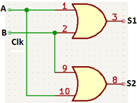
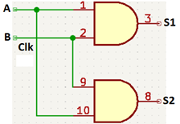

Objetivo. En este ejercicio se va a probar la propiedad. Considerando que muchas de las leyes del algebra de alguna manera ya se han estudiado, vamos a utilizar como una de las señales de entrada el reloj, para así ir viendo la función operativa del reloj.
Procedimiento 1.
Ley Conmutativa,
- Conectar la salida del reloj entrada A, a uno de los pines de AUX 1.
- Conectar la salida del interruptor 1, como entrada B, a uno de los pines de AUX 2.
- Conectar uno de los pines de AUX 1, entrada A, al pin 1 de la compuerta OR del 74LS32; conectar uno de los pines de AUX 2, entrada B, al pin 2 de la compuerta OR del 74LS32.
- Conectar la salida 3 de la compuerta OR del 74LS32 al borne de uno de los LEDs, esta es la salida S1.
- Conectar otro de los pines de AUX 1, entrada A, al pin 12 de la compuerta OR del 74LS32; conectar uno de los pines de AUX 2, entrada B, al pin 13 de la compuerta OR del 74LS32.
- Conectar la salida 11 de la compuerta OR del 74LS32 al borne de uno de los LEDs, esta es la salida S2.
- Ponga el interruptor en ON.
-
Llenar la siguiente tabla de verdad. Compare S1 y S2, saque una conclusión.
OR 74LS32 (1) OR 74LS32 (2) A
Pin 1B
Pin 2S1
Pin 3A
Pin 10B
Pin 9S2
Pin 80 0 0 
1
1 0 1
1
Procedimiento 2.
Ley Conmutativa,
- Conectar la salida del reloj, entrada A, a uno de los pines de AUX 1.
- Conectar la salida del interruptor 1, como entrada B.
- Conectar uno de los pines de AUX 1, entrada A, al pin 1 de la compuerta AND (74LS08); conectar uno de los pines de AUX 2, entrada B, al pin 2 de la compuerta AND (74LS08).
- Conectar la salida 3 de la compuerta AND (74LS08) al borne de uno de los LEDs, esta es la salida S1.
- Conectar otro de los pines de AUX 1, entrada A, al pin 12 de la compuerta AND (74LS08); conectar uno de los pines de AUX 2, entrada B, al pin 13 de la compuerta AND (74LS08).
- Conectar la salida 11 de la compuerta AND (74LS08) a otro borne de uno de los LEDs, esta es la salida S2.
- Ponga el interruptor en ON.
-
Llenar la siguiente tabla de verdad. Compare S1 yS2, saque una conclusión.
AND 74LS08 (1) AND 74LS08 (2) A
Pin 1B
Pin 2S1
Pin 3A
Pin 10B
Pin 9S2
Pin 80 0 0
1
1 0 1
1